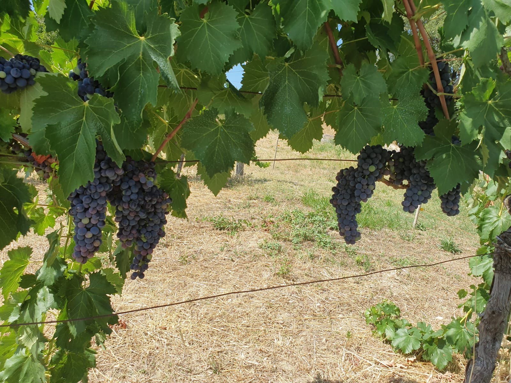

Le vigne
 a prima annata prodotta è stata fatta prendendoci cura di due distinti vigneti 0,5ha totali, arrivati ora a
circa 3, in un regime totalmente biologico (non certificato) attingendo ai principi della permacultura, ove
si cerca la coesistenza di quante più specie vegetali per creare un piccolo ecosistema autosufficiente e
sinergico.
a prima annata prodotta è stata fatta prendendoci cura di due distinti vigneti 0,5ha totali, arrivati ora a
circa 3, in un regime totalmente biologico (non certificato) attingendo ai principi della permacultura, ove
si cerca la coesistenza di quante più specie vegetali per creare un piccolo ecosistema autosufficiente e
sinergico.
